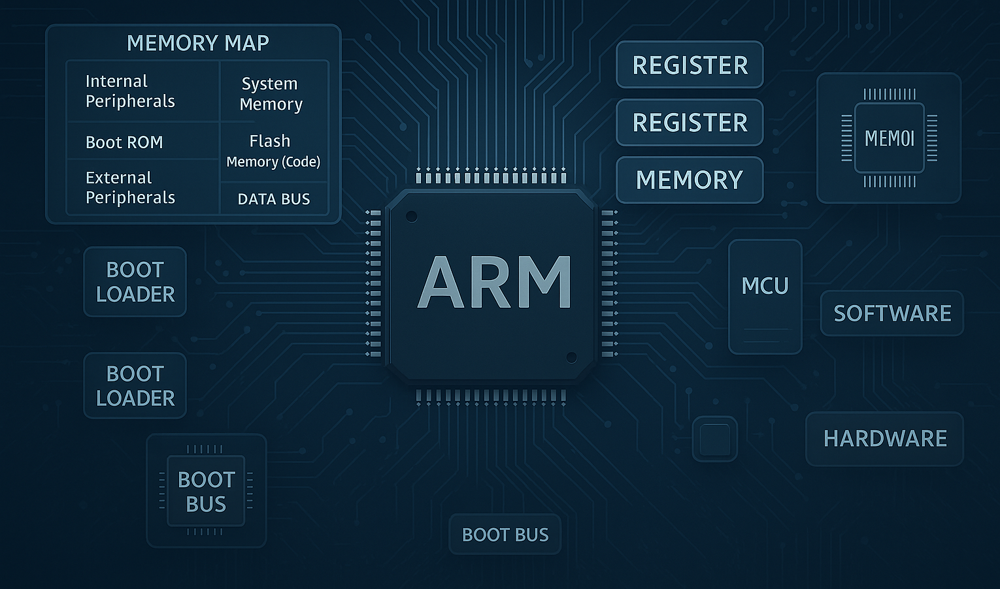
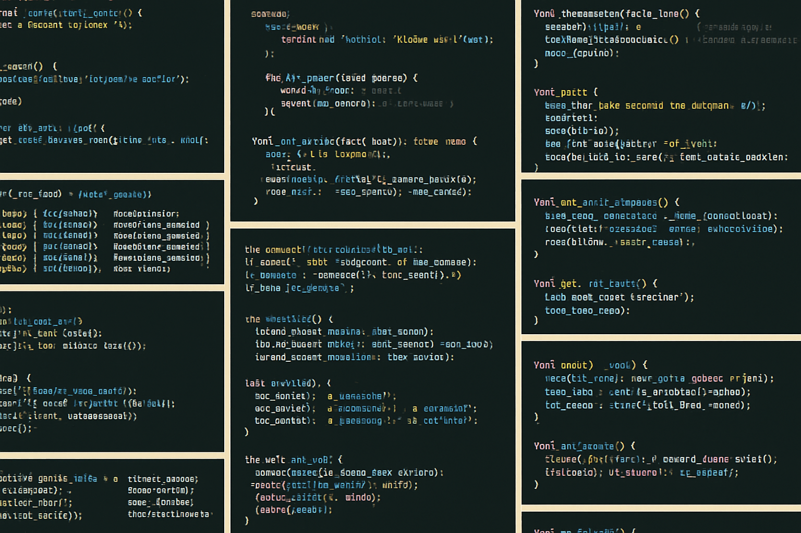
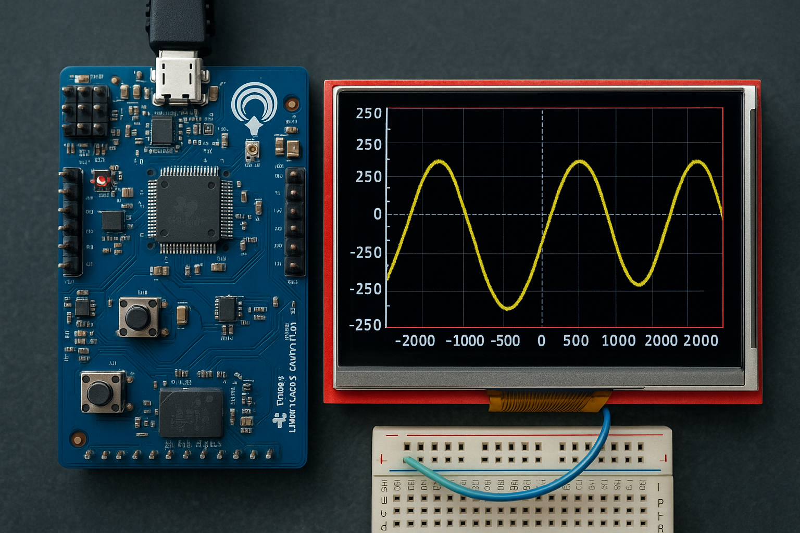

Gömülü sistemlere dair temel mimari yapılar, ARM mimarisi, register yapıları, boot mekanizmaları ve
donanım-software ilişkisine odaklanan detaylı ders notları burada yer alır. Haftalık olarak
genişleyen bu bölümde sistematik ve kaynaklı notlar paylaşılıyor.

Bu bölümde gerçekleştirdiğim 42 özgün projenin teknik açıklamaları, kullanılan mimariler, donanım
detayları ve GitHub bağlantılı kod blokları yer almaktadır. Her proje mühendislik yaklaşımıyla
belgelenmiş, görsellerle desteklenmiştir.

Bu bölümde kendi tasarladığım osiloskop vb.
mikrodenetleyici temelli projelere yer verilmektedir. Donanım şemaları, kod altyapıları ve uygulama
örnekleriyle birlikte sunulmuştur.
Kişisel gelişim, sistematik öğrenme, stratejik düşünme ve zihinsel yatırım temelli içeriklerin
paylaşıldığı bu alanda; üretkenlik, öğrenme metodolojileri ve içsel dönüşüm konuları ön plandadır.